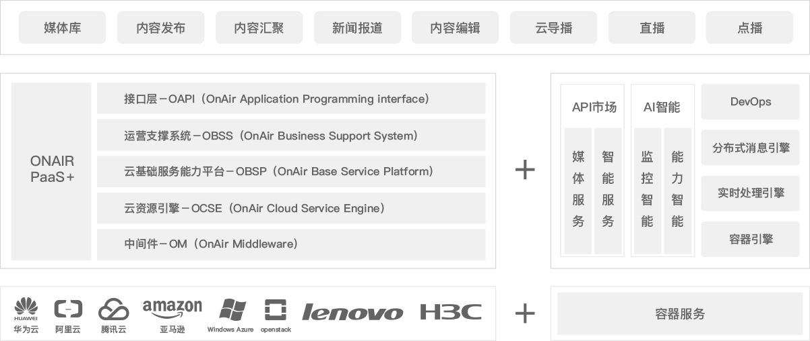
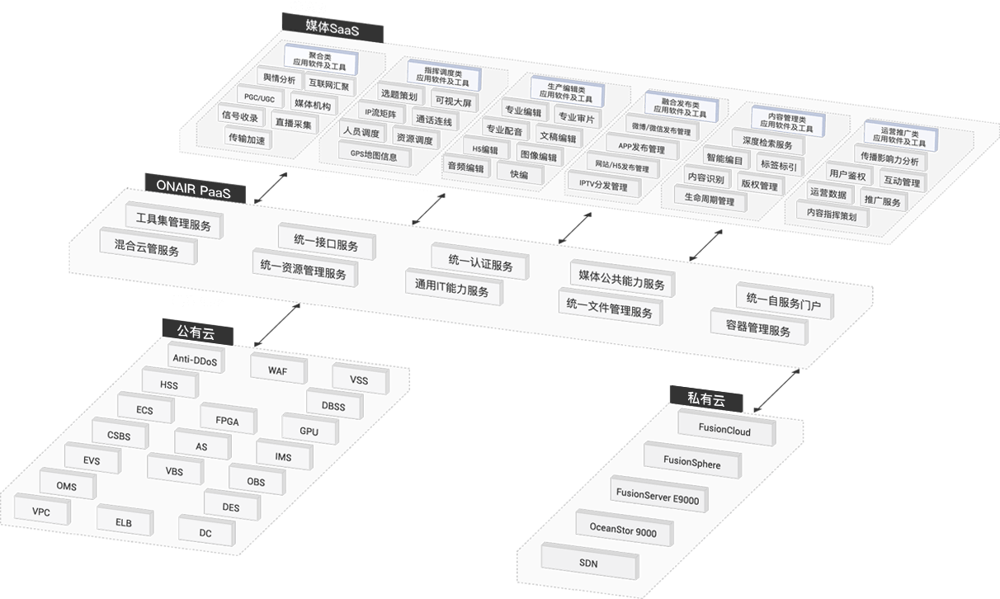

行业趋势
媒体融合发展趋势
互联网的蓬勃发展，人们获取各种媒体资讯的渠道正从传统媒体渠道转向为更易获取、支持互动分享、用户体验更好的移动新媒体渠道。融合媒体强调去中心化，人成为传播的主体与中心。以用户为中心的传播模式，更强调人与人之间的主动传播，更强调快速的业务部署能力，媒体的融合发展有以下趋势：
- 平台“云优先”：采用云计算三层架构，打造运营级融合媒体平台，以微服务技术打造易扩展、松耦合、兼容性强的技术服务系统。
- 业务“移动优先”：云视融合媒体平台参考互联网运营模式，结合媒体行业自身特点，以运营为核心思想。强调速度、广度，抢占舆论新的制高点。
- 运营“数据AI优先”：平台提供、新闻知识库、敏感词库、NLP自然语言处理、人脸识别、OCR识别、语音识别等多种智能AI能力，通过API网关统一对外提供能力输出，为平台的各应用服务赋能。同时以“Kafka+Flink”为平台计算架构，通过对平台上运营的各业务模 块进行数据采集分析，将分析后数据以可视化方式对外进行数据呈现，方便用户实时了解平台运行及运营状态。
业务挑战
在媒体融合的背景下，各个媒体机构都加速建设媒体云平台。由于云技术的应用还需要一个从理念到实践的成熟过程，建设过程中普遍面临如下问题：

设备厂商、IaaS厂商众多，如何实现厂商兼容?
选择开放的架构和中立的厂商


基础资源配置繁琐，管理复杂，如何简化?
采用云服务的方式实现资源一键开通


融合媒体需要互联网服务，如何利用公有云?
通过混合云管理打通私有云和公有云

各个应用都用到重复的功能，如何统一管理?
把应用工具化，作为平台能力部署

媒体文件在应用系统之间迁移，效率如何提高?
采用云存储，实现媒体内容的统一管理
推荐架构

针对融合媒体的需求，阳光云视公司依托多年技术积累和对媒体业务的精深理解，积极参与国家新闻出版广电总局《电视台融合媒体平台建设技术白皮书》的编写，并在白皮书的指导下，精心打造了ONAIR媒体云平台。ONAIR 媒体云平台以媒体PaaS作为核心，对下支持混合云IaaS，对上服务于各种媒体SaaS应用，通过能力建设、开放接口、流程再造，支持广电敏捷生产和新业务的弹性部署，在满足传统业务流程的同时，能够为新业务提供统一的内容支撑、技术服务、数据分析运营计费等服务一体化技术业务平台，有效支撑广电媒体融合创新业务的快速发展
- 中间件：主要目标是实现对不同IaaS平台的统一接入和管理，兼容不同云基础设施服务商提供的IaaS平台，实现跨平台的混合云服务，提高资源的使用效率和安全性
- 云资源引擎：对资源做统一管理和监控，对平台上的工具和服务自动化部署及运行管理监控
- 云基础服务能力平台：支持第三方服务厂商进行工具快速注册，及工具使用情况实时查询。能力工具包括：转码、快编、技审、拆条、直播、收录、轮播、爬虫等等
- 运营支撑系统：对购买用户、服务厂商、工具产品、订单账单进行统一化管理，精细化计量计费，实时分析平台运营状况
- 云平台接口：PaaS层提供了完整的资源、工具和内容的管理规范
- 基础资源方面，支持对容器的管理，可以在平台灵活部署启动容器服务
- 支持DevOps流程，实现业务的快速发布部署和快速迭代
- 支持各种AI能力，如语音识别、文字识别、人脸识别、鉴黄等等
- 支持API网关，可以将各种媒体能力和AI能力发布到API市场，作为能力服务直接供第三方应用调用
解决方案架构
